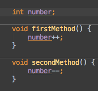
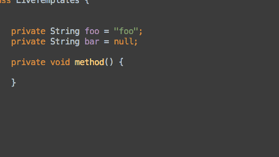
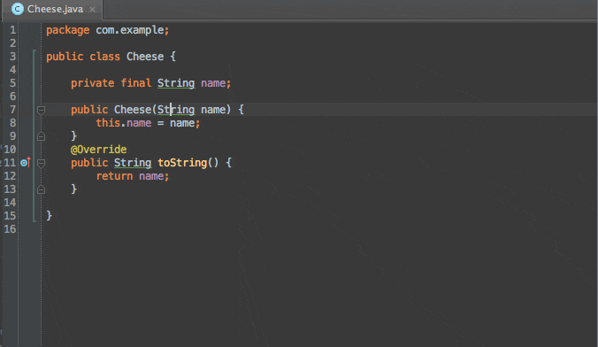
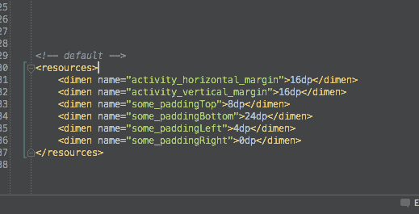
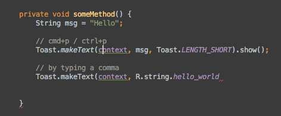

高亮所有
os X: command + shift + F7
Windows Or Linux: ctrl+Shift+F7

- 高亮代码方法中的“return” 或者 “throw” 也会高亮这个方法的所有出口。
- 高亮后可使用”F3”或“shift + F3”上下选择。
- Esc 或者再次使用该快捷键，可以取消高亮。
在方法和内部类之间跳转
OS X: Ctrl + ↑ / ↓
Windows Or Linux: Alt+ ↑ / ↓

跳转到已经打开的下一个/上一个文件
OS X: Ctrl + ← / →
Windows Or Linux: Alt+ ← / →
快速定位到类中的方法/内部类/成员变量
OS X: Command+F12
Windows Or Linux: Ctrl+F12

- 你可以使用驼峰字符来过滤候选方法列表。例如:输入 “oCr” 就可以找到 “onCreate”方法。
- 你可以选择是否展示继承的成员变量。如勾选了”show inherited members”就可以很方便的查找继承自父类的成员变量。
- 你可以选择是否展示匿名类。如勾选了”show Anonymous classes”, 就可以很方便的查找 OnClickListener里面的OnClick方法了。
显示方法的调用层级关系
OS X: Ctrl+Alt+H
Windows Or Linux: Ctrl+Alt+H

注，ubuntu上与输入法快捷键冲突无法使用
快速显示变量或方法的定义
OS X: Alt+Space
Windows Or Linux: Ctrl+Shift+i
如果你想立马知道某个类或者方法的来源同时又不想丢掉当前的编码环境，你可以试试这个快捷键。

快速收缩或者展开代码块
OS X : Alt + +/-
Windows Or Linux: Ctrl +/-

- 可以使用 Ctrl + Shift +/- ** 收缩或者展开文件中的所有方法
- 多次使用会逐级收缩或者展开
你可以在“Editor → Code Folding”自定义你的代码折叠范围
书签
默认书签
OS X : F3
Windows Or Linux : F11
带字母或者数字的标签
OS X : Alt+F3
Windows Or Linux : Ctrl+F11
按下此快捷键就可以在你的当前光标所在行打上标签，并提供字母或者数字标记。如果你选择的是数字标记，那么可以通过ctrl+对应的数字直接跳转至相应位置。
展示标签
OS X : Command+F3
Windows Or Linux : Shift+F11

查找Android Studio的菜单选项
OS X : Command+Shift+A
Windows Or Linux : Ctrl+Shift+A
你可以通过输入菜单名来查找任意的菜单选项，这对那些使用频率低的操作很有效果。

如果这个选项有对应的快捷方式，那么这个快捷键会在列表旁边显示。
行操作
移动整行
OS X : Alt+Shift+ ↑ / ↓
Windows Or Linux: Alt+Shift+ ↑ / ↓

代码行合并
Mac OS : Ctrl+Shift+j
Windows & Linux : Ctrl+Shift+j
按照语法规则将可以合并的代码行进行合并，保持代码精简。它主要适用以下规则：
- 将变量声明定义和赋值合并;
- 合并多行字符串的时候，会移掉“+“和双引号;
- 合并两行评论代码时，评论变成一行，会去掉另一行的“//”;

删除整行
OS X : Command + Backspace
Windows Or Linux : Ctrl + Y

复制整行
Mac OS: Command+D
Windows & Linux: Ctrl+D
这个快捷键的厉害之处在于它会复制当前行同时又不会影响系统的剪贴板。
上下移动整个方法
Mac OS : Command+Alt+↑/↓
Windows & Linux : Ctrl+Shift+↑/↓

展开或者收缩选择区域
Mac OS : alt + ↑/↓
Windows & Linux: (Ctrl+w )/(Ctrl+Shift+w)
扩大（或者缩小）当前的选择范围。比如当前选中一个变量，此操作会把选中范围扩展至句子，方法等。

包裹代码段
Mac OS : Command+Alt+t
Windows & Linux : Ctrl+Alt+t
选中一段代码段，然后使用if语句或者循环结构等包裹代码。

删除代码块的包裹
Mac OS : Command+Shift+Delete
Windows & Linux : Ctrl+Shift+Delete
移除代码结构中的包裹代码，比如 if 语句, while 循环, 或者 try/catch 语句。
查询最近编辑的文件和使用的工作区
Mac OS : Command+e
Windows & Linux : Ctrl+e

代码模板
Mac OS : Command+j
Windows & Linux : Ctrl+j
此快捷键可以让你迅速地在文件中插入预留的代码片段。你也可以定制你自己的代码片段。

代码结构自动补全
Mac OS : Command+Shift+Enter
Windows & Linux : Ctrl+Shift+Enter
这个操作会将还未完成的代码结构补全。一般可以补全的情形如下：
- 在代码行后面添加分号；
- 为 if, while 或者 for 语句添加括号
- 为方法声明添加括号。

回到上次编辑的位置
Mac OS : Command+Shift+backspace
Windows & Linux : Ctrl+Shift+backspace

在代码中根据标签选择功能（Select In）
Mac OS : Alt+F1
Windows: Alt+F1
Linux : 与系统快捷键冲突
在代码中执行此快捷方式可以快速定位到select Target所示的功能中。
调试常用快捷键
添加断点（Toggle Breakpoints）
OSX: Cmd+F8
Windows/Linux: Ctrl+F8
相应大家都知道使用鼠标左键点击行首添加断点，使用快捷键添加断点的方式如下：
条件断点（Conditional Breakpoints）
通过右键断点，可以对一个断点加入条件。只有当满足条件时，才会进入到断点中。调试神技，只对自己关心的情况进行调试，不浪费时间。

在断点上打log
如果你不想在调试过程中添加log，并且重新编译，可以在断点直接打log，查看结果。
鼠标右键点击断点，取消选择“suspend”,并在 “Log evaluated Expression” 中输入你想要打印的log信息。实例如下：
临时断点
鼠标（ubuntu上无效）： Alt+LeftClick in the left gutter
Mac: Cmd+Alt+Shift+F8
Windows/Linux: Ctrl+Alt+Shift+F8
这种方式可以添加一个临时断点，当第一次执行完后，会自动消失。
disable断点
在已经完成了一些条件，或者打印了断点，不再需要这些断点的时候，你可以使这些断点无效。
Mouse(ubuntu 上无效):在已经存在的断点上按住ALT并点击左键： Alt+LeftClick
没有默认的快捷键，如果需要的话，可以创建快捷键。

附加调试器
及时你没有在调试模式下启动app，你也可以通过以下方式开启调试器。你不需要重新在调试模式下调用app。这是非常有用的。
Mouse: 点击图标，选择“ Attach debugger to Android Process”
没有默认的快捷键，如果需要的话，可以创建快捷键。
评估表达式（Evaluate Expression）
快捷键： Alt+F8
这个功能用来检查变量的内容，评估几乎任何有效的Java表达式。要知道，如果你转变了状态，它会保持下去，当你恢复程序的执行。
检查变量（Inspect Variable）
快捷键：在调试时，在表达式中按住ALT键点击鼠标左键 Alt+LeftClick
不需要打开“Evaluate Expression”对话框，即可查看一个评估一个表达式。

标记对象（Mark Object）
- Mouse: 右击并选择 “Mark Object”
- OSX : 选中对象，按 F3
- Windows/Linux: 选中对象，按 F11
在调试过程中，你可以使用这个命令给特定的对象添加一个标签，以便于以后识别该对象。

分析堆栈信息
- Menu: Analyze → Analyze Stacktrace
- Find Actions(ctrl+shift+a)输入”analyze stacktrace”即可查看堆栈信息。
可以从你的剪切板中加载log的堆栈信息，并且使得他是可点击的。对于我们从bug报告中摘取一段堆栈进行分析非常有利。

你可以使用”ProGuard Unscramble”插件来分析混淆后的堆栈信息。
分析数据流
- Menu: Analyze → Analyze Data Flow to Here
- Find action: Analyze Data Flow to Here
可以查看当前变量、参数或field调用的路径！这是非常有用的当你进入到一个你不熟悉的代码环境中，并且你想了解这个参数是怎样传到这里的。
这也有一个反向操作“Analyze Data Flow from Here”，它将会显示变量、field或返回类型的被调用的路径。

显示正在执行的行（Show Execution Point）
快捷键：（debug模式下） : Alt+F10
将光标移动到当前正在调试的行。通常用于下列情况：
- 你中断的某些地方
- 你开始在这个文件查看然后跳到了其它一些文件
- 调用这个快捷键可以返回到你正在一步一步的调试会话的地方

多行选择
- Mac : Ctrl+G
- Windows/Linux: Alt+J
这一条格外的精彩！它可以同时选择多行，进行编辑。这就意味着你可以在同一个文档中有多个光标。
多列选择（Column Selection）
- Mouse(ubuntu上无效): Alt+鼠标拖拽
- Mac : Cmd+Shift+8
- Windows/Linux: Shift+Alt+Insert

和多行编辑的区别在于，多列编辑只能是每一行的相同列一起编辑。
后缀补全（Postfix Completion）
这个不是非常直观的，但是相当的给力，基本上，它是无需按一连串左键到头部，实现方法的包裹的最好的方式了。
比较常用的有：
- .for (for a foreach)
- .format (wraps a string in String.format())
- .cast (wraps a statement in a type cast)

与剪切板代码进行比较（Compare With Clipboard）
- Mouse: right-click the selection and select Compare With Clipboard
- Find action: compare with clipboard
用来比较当前你选择的代码和剪切板中的代码有什么区别。个人觉得用处不大。

停止进程
- Mac : Cmd+F2
- Windows/Linux: Ctrl+F2
将会终止正在运行的最近的task或者显示一个可选的可能需要终止的task列表。用于停止调试或者终止一个build。

VCS 操作弹窗
Mac: Ctrl+V
Windows/Linux: Alt+`
显示一些常用的版本控制命令。如git commit。

与分支进行比较（Compare With Branch (Git)）
Menu (for git): VCS -> Git -> Compare With Branch
Find Actions: Compare With Branch
如果你的项目是在git下，你可以同另一个分支比较你的文件或者文件夹。特别用来比较你的修改和主分支差异多大。

回车键和TAB键的区别
你可以使用Enter或Tab来自动补全代码。它们之间有一个有趣的差异：使用Enter将会自动完成语句。使用Tab将会自动完成删除光标到下一个点号，括号，分号或空格出现前的内容。

跳转到父类的方法
Mac: Cmd+U
Windows/Linux: Ctrl+U
如果光标在一个复写自父类的方法中（例如Activity#onCreate()方法），使用该快捷键，将会到达该方法的父类的实现。如果光标停留在类名上，则跳转到父类。

返回到编辑器（Return to the Editor）
返回并不关闭面板：Escape
返回并关闭面板：Shift+Escape

跳到最近使用的工具窗口
Mac:F12
Windows/Linux:F12
有时候，你从面板返回到编辑器，但是你发现不得不再返回到这个面板。例如：浏览find usages。使用这个快捷键，你可以不用鼠标返回到这个面板。

隐藏所有面板（Hide All Panels）
Mac: Cmd+Shift+F12
windows/linux: Ctrl+Shift+F12
让编辑器进入某种形式上的全屏模式。再次调用这个快捷键可以返回所有面板到它们之前的状态。

通过编号打开面板
Mac: Cmd+Number
windows/linux: Alt+Number
可以通过面板上标签对应的数字打开相应的面板。

参数信息
Mac: Cmd+P
windows/linux: Ctrl+P

切换器
Shortcut: Ctrl+Tab
这个功能和IDE的alt+tab/cmd+tab差不多。它允许你导航到一个tab或一个panel。一旦它被打开，只要你按住ctrl键，你可以使用数字或字母快捷键快速导航。你也可以通过按下backspace关闭一个打开的文件。

上下文信息（Context Info）
Shortcut: Ctrl+Shift+Q
这个将会显示你当前位置，当你的定义范围超出滚动的区域时。通常，这将会是类或内部类的名称，但它也可能是当前方法名。在我看来，它最好的使用是快速查看当前类继承或实现。 它也可以在xml文件中使用。

代码重构
Mac: Ctrl+T
Windows/Linux: Ctrl+Alt+Shift+T
这是一个针对当前选择的代码显示上下文所有可用的重构的快捷键。这个列表可以通过键盘进行检索并且你也可以使用左侧的数字进行快速访问
跳转到最近编辑的文件（Recently Changed Files）
Mac: Cmd+Shift+E
Windows/Linux: Ctrl+Shift+E
这个和“Recents”弹出框有所不同，这个列出是在本地最近被修改的文件。

提取变量
Mac: Cmd+Alt+V
Windows/Linux: Ctrl+Alt+V
这是一个可以不用通过重构菜单，来提取变量的快捷键。

额外的技巧：
如果你想修改声明类型为一些更通用的（如：List而不是ArrayList）,你可以使用Shift+Tab它会给出一个可用类型的列表。
提取参数
Mac:Cmd+Alt+P
Windows/Linux:Ctrl+Alt+P
这是一个不用通过重构菜单提取参数的快捷键。
这个功能是有用的当你意识到一个方法可能是泛型时通过提取一部分做为一个参数。它作用的方式是它会使用当前值作为一个参数然后复制原先的值作为每个调用者的参数。
额外的技巧：
你也可以保持原来的方法使用它声明一个新方法通过“delegate”选项。
提取方法
Mac: Cmd+Alt+M
Windows/Linux: Ctrl+Alt+M
可以提取一个代码块做为一个新的方法。这个功能是相当有用的。无论什么时候你遇到一个开始变得有点复杂的方法，你可以使用这个安全地抽取一部分到另一个方法。我所说的安全是因为IDE不会像我们可能会犯一个愚蠢的复制粘贴错误。

额外的技巧：
当你在抽取对话框，你可以修改方法的可见性和参数名称。
inline
Mac: Cmd+Alt+N
Windows/Linux: Ctrl+Alt+N
你使用提取有一点疯狂并且现在有太多的东西？你可以使用反向操作，它叫做“inline”。
它可以作用于方法，Fields，参数和变量。

重命名
快捷键： Shift+F6 
Pull Up / Push Down
Mac: Ctrl+T 然后选择成员
Windows/Linux: Ctrl+Alt+Shift+T 然后选择成员
当我们谈论上拉成员，我们的意思是我们将会让当前类的一些成员（通常是方法或field）发送它到父类或接口。
如果继承于一个类，内容会被移动。如果是实现的一个接口，它将会声明方法作为接口的一部分，在你的类中保持原有的方法并且添加 @Override注解。
当我们谈论下推成员，这正好是反向操作，我们会从父类或接口发送一些成员到子类
索引
| 按键 | 说明 |
|---|---|
| Ctrl(Command)+C | 复制当前行或选中的内容 |
| Ctrl(Command)+D | 粘贴当前行或选中的内容 |
| Ctrl(Command)+X | 剪切当前行或选中的内容 |
| Ctrl(Command)+Y | 删除行 |
| Ctrl(Command)+Z | 倒退 |
| Ctrl(Command)+Shift+Z | 向前 |
| Alt(Option)+Enter | 自动修正 |
| Ctrl(Command)+Alt(Option)+L | 格式化代码 |
| Ctrl(Command)+Alt(Option)+I | 将选中的代码进行自动缩进编排 |
| Ctrl(Command)+Alt(Option)+O | 优化导入的类和包 |
| Alt(Option)+Insert | 得到一些Intention Action，可以生成构造器、Getter、Setter、将 == 改为equals() 等 |
| Ctrl(Command)+Shift+V | 选最近使用的剪贴板内容并插入 |
| Ctrl(Command)+Alt(Option)+Shift+V | 简单粘贴 |
| Ctrl(Command)+Shift+Insert | 选最近使用的剪贴板内容并插入（同Ctrl(Command)+Shift+V） |
| Ctrl(Command)+Enter | 在当前行的上面插入新行，并移动光标到新行（此功能光标在行首时有效） |
| Shift+Enter | 在当前行的下面插入新行，并移动光标到新行 |
| Ctrl(Command)+J | 自动代码 |
| Ctrl(Command)+Alt(Option)+T | 把选中的代码放在 try{} 、if{} 、 else{} 里 |
| Shift+Alt(Option)+Insert | 竖编辑模式 |
| Ctrl(Command)+ / | 注释 // |
| Ctrl(Command)+Shift+ / | 注释 /…/ |
| Ctrl(Command)+Shift+J | 合并成一行 |
| F2/Shift+F2 | 跳转到下/上一个错误语句处 |
| Ctrl(Command)+Shift+Back | 跳转到上次编辑的地方 |
| Ctrl(Command)+Alt(Option)+Space | 类名自动完成 |
| Shift+Alt(Option)+Up/Down | 内容向上/下移动 |
| Ctrl(Command)+Shift+Up/Down | 语句向上/下移动 |
| Ctrl(Command)+Shift+U | 大小写切换 |
| Tab | 代码标签输入完成后，按 Tab，生成代码 |
| Ctrl(Command)+Backspace | 按单词删除 |
| Ctrl(Command)+Shift+Enter | 语句完成 |
| Ctrl(Command)+Alt(Option)+J | 用动态模板环绕 |
文件
| 按键 | 说明 |
|---|---|
| Ctrl(Command)+F12 | 显示当前文件的结构 |
| Ctrl(Command)+H | 显示类继承结构图 |
| Ctrl(Command)+Q | 显示注释文档 |
| Ctrl(Command)+P | 方法参数提示 |
| Ctrl(Command)+U | 打开当前类的父类或者实现的接口 |
| Alt(Option)+Left/Right | 切换代码视图 |
| Ctrl(Command)+Alt(Option)+Left/Right | 返回上次编辑的位置 |
| Alt(Option)+Up/Down | 在方法间快速移动定位 |
| Ctrl(Command)+B | 快速打开光标处的类或方法 |
| Ctrl(Command)+W | 选中代码，连续按会有其他效果 |
| Ctrl(Command)+Shift+W | 取消选择光标所在词 |
| Ctrl(Command)+ - / + | 折叠/展开代码 |
| Ctrl(Command)+Shift+ - / + | 折叠/展开全部代码 |
| Ctrl(Command)+Shift+. | 折叠/展开当前花括号中的代码 |
| Ctrl(Command)+ ] / [ | 跳转到代码块结束/开始处 |
| F2 或 Shift+F2 | 高亮错误或警告快速定位 |
| Ctrl(Command)+Shift+C | 复制路径 |
| Ctrl(Command)+Alt(Option)+Shift+C | 复制引用，必须选择类名 |
| Alt(Option)+Up/Down | 在方法间快速移动定位 |
| Shift+F1 | 要打开编辑器光标字符处使用的类或者方法 Java 文档的浏览器 |
| Ctrl(Command)+G | 定位行 |
查找
| 按键 | 说明 |
|---|---|
| Ctrl(Command)+F | 在当前窗口查找文本 |
| Ctrl(Command)+Shift+F | 在指定环境下查找文本 |
| F3 | 向下查找关键字出现位置 |
| Shift+F3 | 向上一个关键字出现位置 |
| Ctrl(Command)+R | 在当前窗口替换文本 |
| Ctrl(Command)+Shift+R | 在指定窗口替换文本 |
| Ctrl(Command)+N | 查找类 |
| Ctrl(Command)+Shift+N | 查找文件 |
| Ctrl(Command)+Shift+Alt(Option)+N | 查找项目中的方法或变量 |
| Ctrl(Command)+B | 查找变量的来源 |
| Ctrl(Command)+Alt(Option)+B | 快速打开光标处的类或方法 |
| Ctrl(Command)+Shift+B | 跳转到类或方法实现处 |
| Ctrl(Command)+E | 最近打开的文件 |
| Alt(Option)+F3 | 快速查找，效果和Ctrl(Command)+F相同 |
| F4 | 跳转至定义变量的位置 |
| Alt(Option)+F7 | 查询当前元素在工程中的引用 |
| Ctrl(Command)+F7 | 查询当前元素在当前文件中的引用，然后按 F3 可以选择 |
| Ctrl(Command)+Alt(Option)+F7 | 选中查询当前元素在工程中的引用 |
| Ctrl(Command)+Shift+F7 | 高亮显示匹配的字符，按 Esc 高亮消失 |
| Ctrl(Command)+Alt(Option)+F7 | 查找某个方法的所有调用地方 |
| Ctrl(Command)+Shift+Alt(Option)+N | 查找类中的方法或变量 |
| Ctrl(Command)+Shift+O | 弹出显示查找内容 |
| Ctrl(Command)+Alt(Option)+Up/Down | 快速跳转搜索结果 |
| Ctrl(Command)+Shift+S | 高级搜索、搜索结构 |
重构
| 按键 | 说明 |
|---|---|
| F5 | 复制 |
| F6 | 移动 |
| Alt(Option)+Delete | 安全删除 |
| Ctrl(Command)+U | 转到父类 |
| Ctrl(Command)+O | 重写父类的方法 |
| Ctrl(Command)+I | 实现方法 |
| Ctrl(Command)+Alt(Option)+N | 内联 |
| Ctrl(Command)+Alt(Option)+Shift+T | 弹出重构菜单 |
| Shift+F6 | 重构-重命名 |
| Ctrl(Command)+Alt(Option)+M | 提取代码组成方法 |
| Ctrl(Command)+Alt(Option)+C | 将变量更改为常量 |
| Ctrl(Command)+Alt(Option)+V | 定义变量引用当前对象或者方法的返回值 |
| Ctrl(Command)+Alt(Option)+F | 将局部变量更改为类的成员变量 |
| Ctrl(Command)+Alt(Option)+P | 将变量更改为方法的参数 |
调试
| 按键 | 说明 |
|---|---|
| F8 | 跳到下一步 |
| Shift+F8 | 跳出函数、跳到下一个断点 |
| Alt(Option)+Shift+F8 | 强制跳出函数 |
| F7 | 进入代码 |
| Shift+F7 | 智能进入代码 |
| Alt(Option)+Shift+F7 | 强制进入代码 |
| Alt(Option)+F9 | 运行至光标处 |
| Ctrl(Command)+Alt(Option)+F9 | 强制运行至光标处 |
| Ctrl(Command)+F2 | 停止运行 |
| Alt(Option)+F8 | 计算变量值 |
VCS
| 按键 | 说明 |
|---|---|
| Alt(Option)+ ~ | VCS 操作菜单 |
| Ctrl(Command)+K | 提交更改 |
| Ctrl(Command)+T | 更新项目 |
| Ctrl(Command)+Alt(Option)+Shift+D | 显示变化 |
谢谢阅读完这篇整理的文章，希望从中能够收获知识。
转载请注明出处：www.aman.site
参考文献：
Android Cool Posts
Android Studio Tips Of the Day - Roundup #1
Android Studio Tips Of the Day - Roundup #2
Android Studio Tips Of the Day - Roundup #3
Android Studio Tips Of the Day - Roundup #4
Android Studio Tips Of the Day - Roundup #5
Android Studio Tips Of the Day - Roundup #6